Так, посмотри направо и пойми, что там есть какой то красавчик. Попробуй на него нажать и посмотрим, что произойдет.
Там находятся фотки меня и моих кентов. Ну так, чтоб было, мб ещё добавлю. Там я не буду делать темную тему, мне в падлу.

Так, посмотри направо и пойми, что там есть какой то красавчик. Попробуй на него нажать и посмотрим, что произойдет.
Там находятся фотки меня и моих кентов. Ну так, чтоб было, мб ещё добавлю. Там я не буду делать темную тему, мне в падлу.
Домашний, австрийский художник, по совместительству - мой брат братан братишка
а вот мой споти, заходить только с впн, по другому не как
яндекс музыка, редко пользуюсь, но что то вроде есть
Это уже вторая моя попытка сделать сайт. Первая попытка была хорошей, но всё же там мало всего. По итогу я решил сделать полностью новый сайт. Может он попадёт в мой индивидуальный проект. Данную работу я сделал полностью сам, взял материал и начал его изучать. Что-то я ещё помнил, а что-то уже и забыл. Мне понравилось делать сайт. Я могу сказать, что доволен этой работой, даже какой-то функционал получился. Планирую разместить сливы Тохи и игру запилить. Так что ждите, наберусь знаний и тогда будут вам игры, тачки, тёлки, админки. Работайте, братья!
Я нашел поистине своего человека, с которым мне приятно находится, мне с ним комфортно. Рядом с ней я ощущаю теплоту и заботу. Она у меня первая и последняя, я обожаю её всем сердцем, люблю её очень сильно, я не предтсавляею что бы я без неё делал. Я хочу её сделать самой счастливой, ведь она моё чудо и это чудо называется <<Кира>>. Я хочу прожить с ней новые чувства, новые эмоции, побывать с ней в новых местах, но всё это только с ней. Она мне как солнышко, сияет ярче всех и греет меня, прям как солнышко. О такой девушке как ты, я даже мечтать не мог! Так что спасибо тебе за всё. Люблю тебя Кира
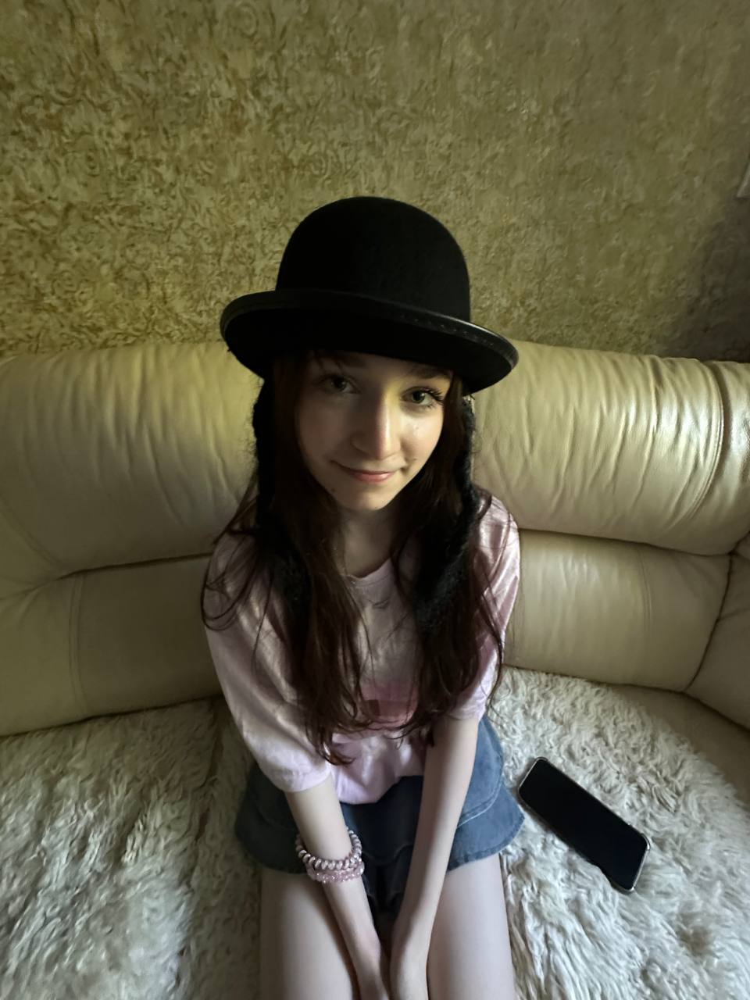 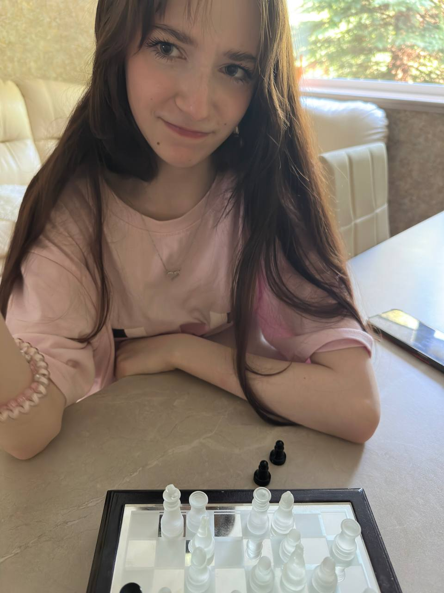 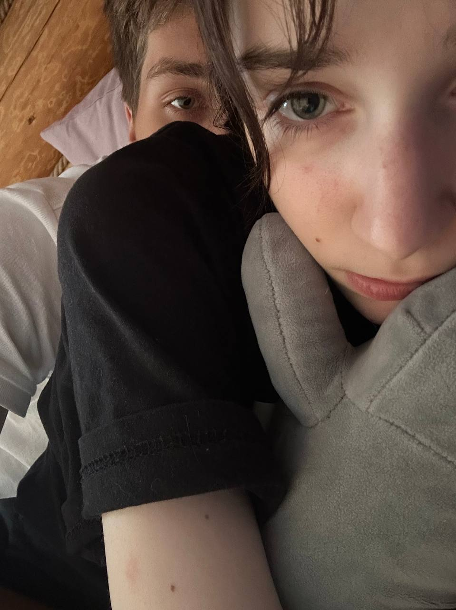 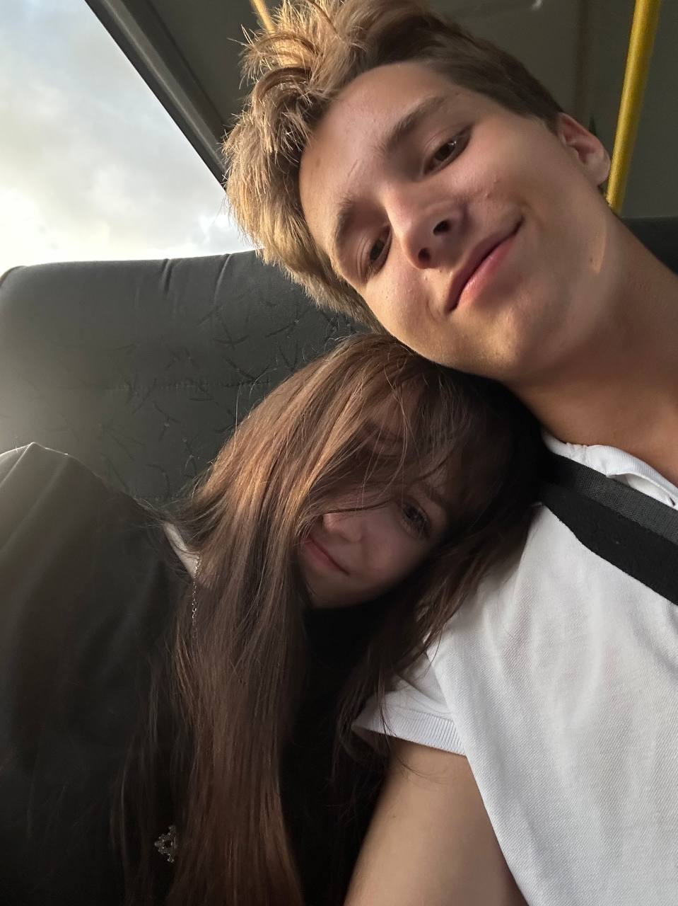 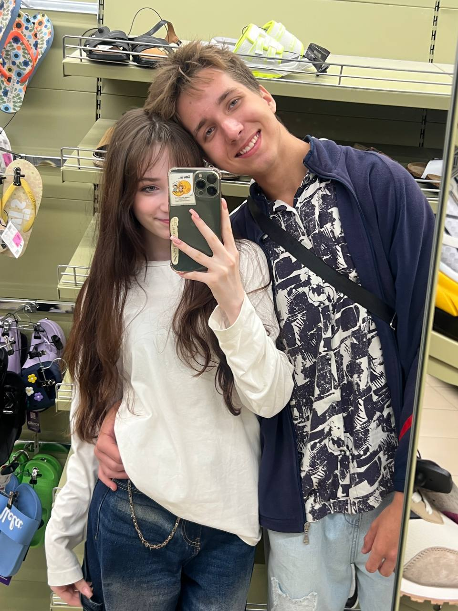.jpg) 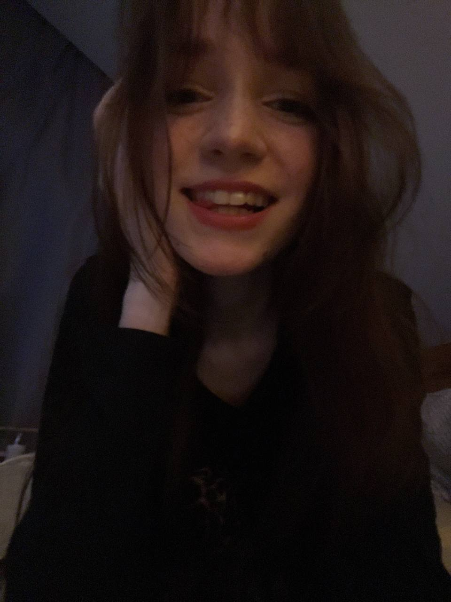
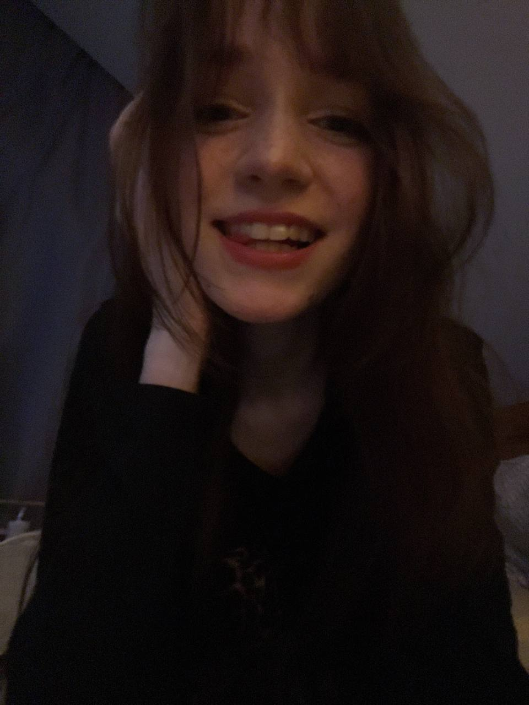
.jpg) 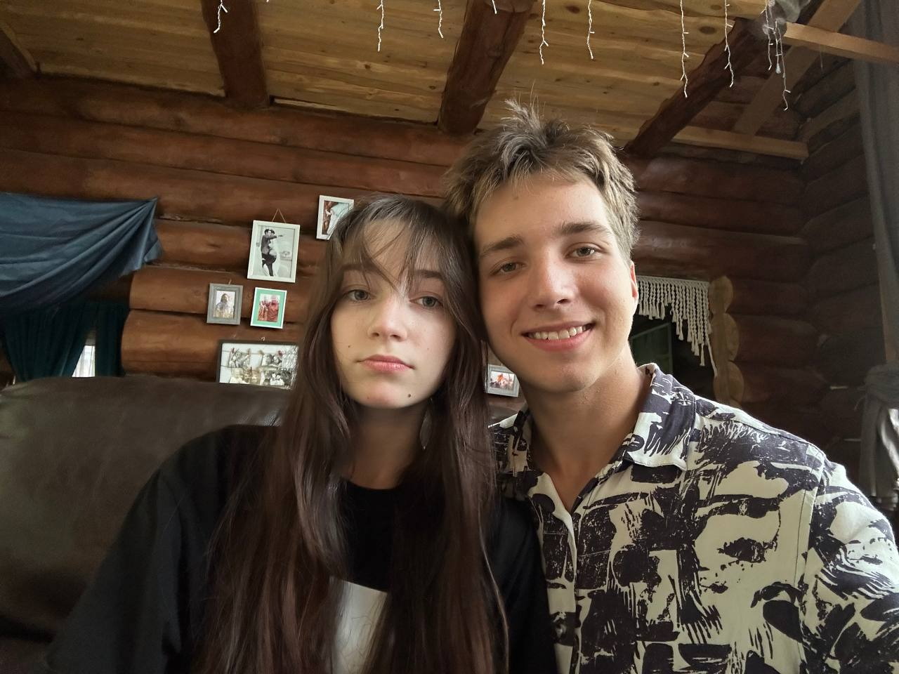
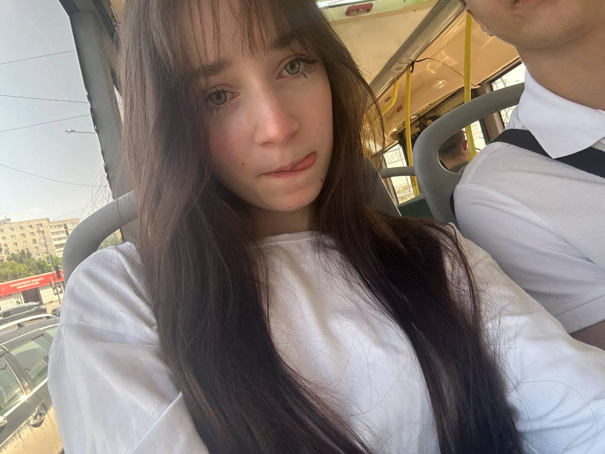
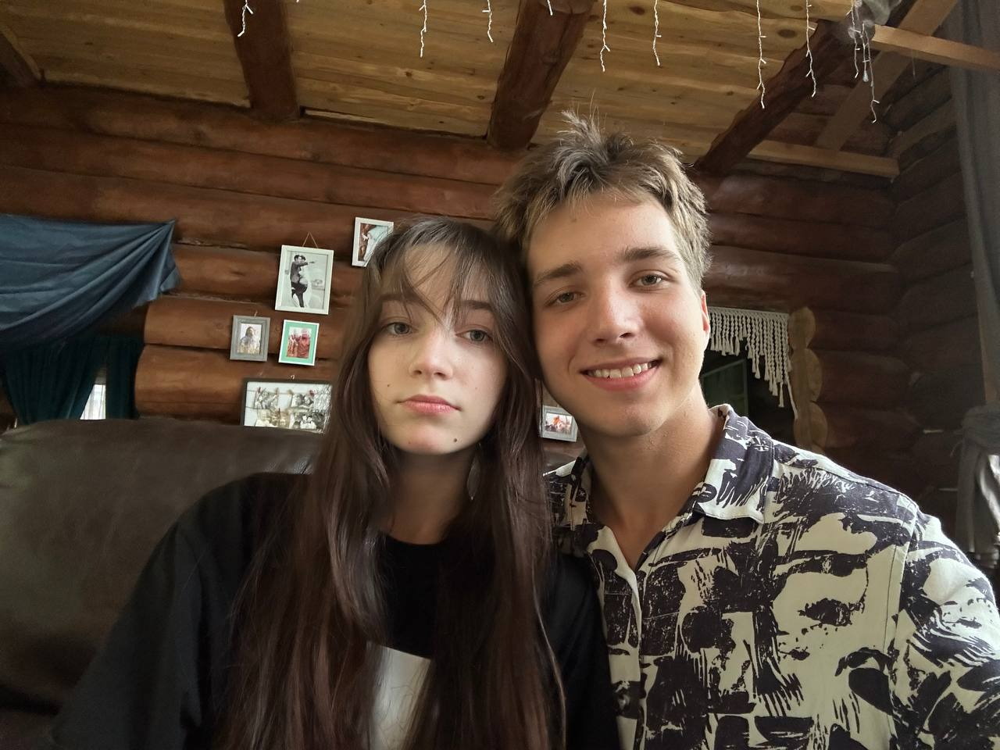
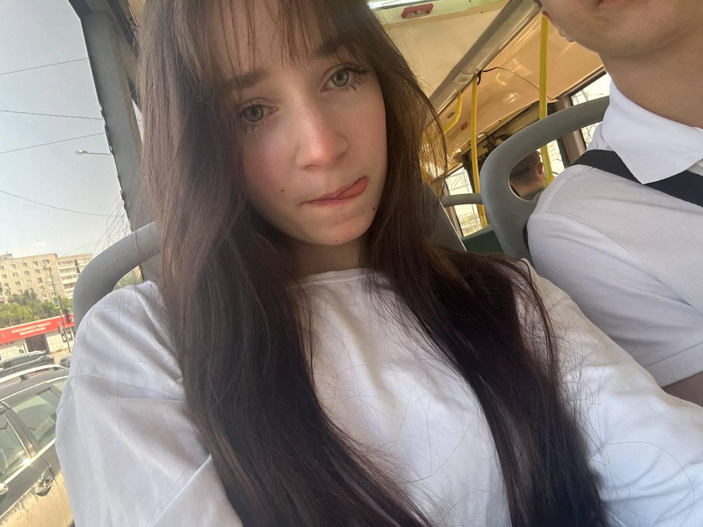